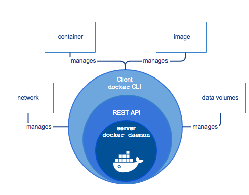

王国维在《人间词话》中说：“古之成大事业、大学问者必经过三种之境界。第一境界：昨夜西风凋碧树，独上高楼，望尽天涯路。第二境界：衣带渐宽终不悔，为伊消得人憔悴。第三境界：众里寻他千百度过，蓦然回首，那人却在灯火阑珊处。”
Docker安装
一、安装
- 方式
- 使用桌面版
- 使用apt源
- 手动安装
- 使用官方脚本
二、问题
三、参考
Docker基础
一、基础
Docker是一个开源的应用容器引擎，让开发者可以打包他们的应用以及依赖包到一个可移植的容器中，然后发布到任何流行的Linux机器或Windows机器上，也可以实现虚拟化，容器是完全使用沙箱机制，相互之间不会有任何接口。它是一种Linux容器技术，容器有效的将由单个操作系统挂管理的资源划分到孤立的组中，以便更好的在组之间平衡有冲突的资源使用需求，可简单理解为一种沙盒。每个容器内运行一个应用，不同的容器之间相互隔离，容器之间也可以建立通信机制。容器的创建和停止都十分快速，资源需求远远低于虚拟机。
一个完整的Docker有以下几个部分组成：
- Docker Daemon守护进程
- Docker Client客户端
- Docker Image镜像
- Docker Container容器

能干什么
- 快速部署
- 解决虚拟机资源消耗问题
- 提供一次性的环境
- 提供弹性的云服务
- 组建微服务架构
镜像
- docker的镜像概念类似虚拟机的镜像，可以将他理解为一个面向Docker引擎的只读模板，包含了文件系统，包括运行容器所需的数据，可以用来创建新的容器。
- 如命令：
docker create image_id，它的意思是为指定的镜像添加一个可读写层，构成一个新的容器
- 如命令：
- docker镜像实际上是由一层一层的系统文件组成，这种层级的文件系统被称为UnionFS(Union file system，统一文件系统)。
- docker镜像可以基于dockerfile构建，dockerfile是一个描述文件，里面包含了若干条密令，每条命令都会对基础文件系统创建新的层次结构。
- docker镜像是创建docker容器的基础，通过版本管理和增量的文件系统，docker提供了一套十分简单的机制来创建和更新现有的镜像，用户甚至可以从其他人那里下载一个已经做好的镜像直接使用并通过命令直接使用。总之，应用运行是需要环境的，而镜像就是来提供这种环境。
- 镜像是只读的，可以理解为静态文件。
- docker的镜像概念类似虚拟机的镜像，可以将他理解为一个面向Docker引擎的只读模板，包含了文件系统，包括运行容器所需的数据，可以用来创建新的容器。
容器
- docker容器类似于一个轻量级的沙箱子，docker利用容器来运行和隔离应用。
- 容器从镜像启动的时候，docker会在镜像的最上一层创建一个可写层，镜像本身是只读的，保持不变。
仓库
- docker仓库(repository)类似于代码仓库，是docker集中存放镜像文件的场所。
- docker仓库是用来包含镜像的位置，docker提供了一个注册服务器(register)来保存多个仓库，每个仓库又可以包含多个具备不同tag的镜像。
- docker运作中使用的默认仓库是docker hub公共仓库。
- 仓库支持的操作类似git，当用户创建了自己的镜像之后就可以使用push命令将它上传到共有或者私有的仓库。这样下次再另外一台机器上使用这个镜像的时候只需要从仓库里面pull下来就可以了。
二、常用命令
docker version: 19.03.1
镜像
- 查找公网镜像
docker search [OPTIONS] image_name - 拉取公网镜像
docker pull image_name[:tag_name] - 查看已有镜像
docker images - 导出已有镜像
docker save -o image_name.tar image_name - 导入本地镜像
docker load --input image_name.tar或docker load < image_name.tar - 删除已有镜像
docker rmi image_name - 查看镜像信息
docker inspect image_name/image_id
- 查找公网镜像
容器
创建容器
docker create -it image_name:tag/image_id-i:以交互模式运行容器，通常与 -t 同时使用-t:为容器重新分配一个伪输入终端，通常与 -i 同时使用
查看容器
docker ps [OPTIONS]-a:显示所有的容器，包括未运行的-f:根据条件过滤显示的内容-l:显示最近创建的容器-n:列出最近创建的n个容器-q:静默模式，只显示容器编号-s:显示总的文件大小
启动容器
docker start -i -a container_id-a:Attach STDOUT/STDERR and forward signals-i:以交互模式运行容器
进入容器
docker exec -it container /bin/sh创建并启动容器
docker run [OPTIONS] IMAGE [COMMAND] [ARG...]，相当于docker pull + docker create + docker start-a stdin: 指定标准输入输出内容类型，可选 STDIN/STDOUT/STDERR 三项-d: 后台运行容器，并返回容器ID-i: 以交互模式运行容器，通常与 -t 同时使用-P: 随机端口映射，容器内部端口随机映射到主机的高端口-p: 指定端口映射，格式为：主机(宿主)端口:容器端口-t: 为容器重新分配一个伪输入终端，通常与 -i 同时使用-m:设置容器使用内存最大值--name="nginx-lb": 为容器指定一个名称--dns 8.8.8.8: 指定容器使用的DNS服务器，默认和宿主一致--dns-search example.com: 指定容器DNS搜索域名，默认和宿主一致-h "mars": 指定容器的hostname-e username="ritchie": 设置环境变量--env-file=[]: 从指定文件读入环境变量--cpuset="0-2" or --cpuset="0,1,2": 绑定容器到指定CPU运行--net="bridge": 指定容器的网络连接类型，支持 bridge/host/none/container: 四种类型--link=[]: 添加链接到另一个容器--expose=[]: 开放一个端口或一组端口--volume , -v: 绑定一个卷
移除容器
docker rm container_id终止容器
docker kill container_id关闭/重启容器
docker stop/restart container查看容器信息
docker inspect container查看容器日志
docker logs container查看容器资源状况
docker stats container显示容器正在运行进程
docker top container退出后容器依然保持启动状态
control + p && control + q
仓库
- 登录仓库
docker login - 拉取镜像
docker pull - 推送镜像
docker push - 查找镜像/容器
docker search
- 登录仓库
其他
- 查看docker版本
docker --version - 查看docker信息
docker info - docker所有命令
docker --help
- 查看docker版本
镜像(Image)和容器(Container)的关系，就像是面向对象程序设计中的类和实例一样，镜像是静态的定义，容器是镜像运行时的实体。容器可以被创建、启动、停止、删除、暂停等。容器的实质是进程，但与直接在宿主执行的进程不同，容器进程运行于属于自己的独立的命名空间。因此容器可以拥有自己的root文件系统、自己的网络配置、自己的进程空间，甚至自己的用户ID空间。容器内的进程是运行在一个隔离的环境里，使用起来就好像是在一个独立于宿主的系统下操作一样，这种特性使得容器封装的应用比直接在宿主运行更加安全。
- 镜像
- 查看镜像仓库
docker search ubuntu - 拉取仓库镜像
docker pull ubuntu - 查看本地镜像
docker images - 删除本地镜像
docker rmi ubuntu - 加载镜像
docker load -i image_path
- 查看镜像仓库
- 容器
- 创建并启动容器
docker run -it --name ubuntu ubuntu /bin/bash - 查看运行的容器
docker ps- 查看所有的容器
docker ps -a
- 查看所有的容器
- (在容器中)退出并保持运行状态
control + p && control + q，同exit- (在容器中)退出并退出运行状态
exit(exec进入的容器是个特例)
- (在容器中)退出并退出运行状态
- 停止运行的容器
docker stop ubuntu - 启动并运行容器
docker start -ia ubuntu - 进入容器
docker attach ubuntu- 退出并终止运行
exit
- 退出并终止运行
- 开启容器
docker start ubuntu - 进入容器
docker exec -it ubuntu /bin/bash- 退出并保持运行
exit，同control + p && control + q
- 退出并保持运行
- 移除容器
docker rm ubuntu
- 创建并启动容器
- 镜像
进入docker的四种方式
- 使用docker attach
- 使用ssh
- 使用nssenter
- 使用docker exec
docker info | grep Root
- cd /var/lib/docker/containers
- config.v2.json
docker stats
- docker images
- docker run
- docker-compose
- docker ps -a –no-trunc
- docker stop xxxdock_php-fpm_1
查看镜像仓库地址：cat /etc/docker/daemon.json
三、实战
- 查找redis：docker search redis
- 报错：Error response from daemon: Get “https://index.docker.io/v1/search?q=redis&n=25": dial tcp 199.59.149.201:443: i/o timeout
- 解决：哈哈，以下1/2两种方式都没解决，3没有试
- 方式1：直接修改/etc/resolv.conf，增加一行dns地址：nameserver 8.8.4.4
- Error response from daemon: Get “https://index.docker.io/v1/search?q=redis&n=25": dial tcp 108.160.162.98:443: i/o timeout
- 方式2：dig @114.114.114.114 index.docker.io，把返回添加至hosts文件：
- Error response from daemon: Get “https://index.docker.io/v1/search?q=redis&n=25": read tcp 172.28.29.175:52534->34.195.83.243:443: read: connection reset by peer
- 方式3：修改镜像源，vim /etc/docker/daemon.json
- 方式1：直接修改/etc/resolv.conf，增加一行dns地址：nameserver 8.8.4.4
1 | { |
启动redis：docker run –name some-redis -d redis
进入redis
- 方式1：docker exec -it some-redis redis-cli
- 方式2：docker exec -it some_redis /bin/sh